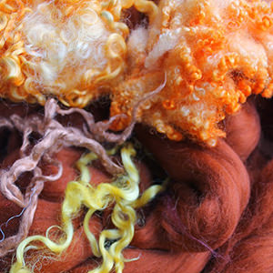

Beginnings
Bernadett Fekete, the Founder of SocialFelt – Craft, Touch and Care, is a Qualified Social Worker (MA) and have been working in Child Protection, Juvenile Justice and in Refugee Affairs in the UK, Hungary, India and the Philippines. She has more than 15 years of professional experience in working with disadvantaged youth from different marginalized groups such as street children, children affected by HIV, Gipsy youth, unaccompanied refugee minors, juvenile offenders and victims of child prostitution.
During her career in Social Work she has been working in cross-cultural settings in Europe and in Asia, where at times language and culture was a barrier in effective intervention and she became involved in searching for culture sensitive methods to deal with trauma, rehabilitation and healing in a non-verbal way.
Working with asylum seeker unaccompanied minors and victims of human trafficking in the UK, she realized that there is a gap in social welfare and mental health services, where professionals are less likely to be prepared to work with people from different cultures, especially if not speaking the same language.
Most of the times there is no resource or access for adequate professional interpreters assisting in counselling or other therapies, or the person in need of help feels ashamed to talk in the presence of the interpreter about her/his problems due to cultural reasons. In the same time, Western-type psychotherapies might not be suitable to help people from cultures where expressing individual feelings and views are not appropriate.
Due to the globalization, economic and political reasons, wars and natural disasters and the enormous migration, millions of people find themselves in abroad, far from their home and original culture. Many of them has gone through a very hard time back in their home country, during their journey or whilst settling down in a new country, and many of them became victims of international organized crimes. The most vulnerable group of migration are the children and women.
Targeting the above mentioned issues, she started a research on craft therapies and she started developing the ‘Felt Therapy’, a method using feltmaking as a creative therapy in Social Work. She would like to introduce felt and wool as a culture sensitive therapeutic tool for healing, as a medium for rehabilitation of deprived and/or traumatized groups and communities, and to achieve positive social changes.
You can see her detailed CV here.